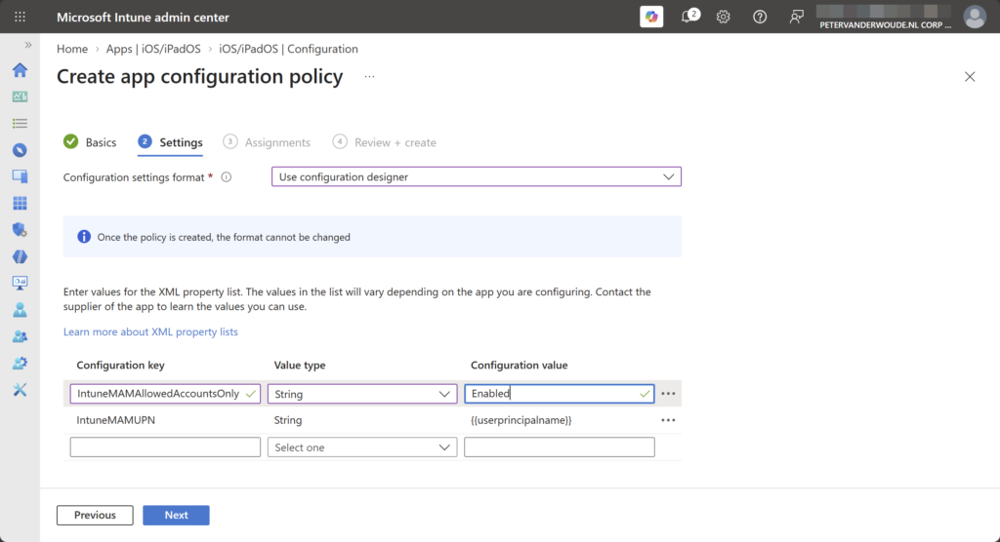
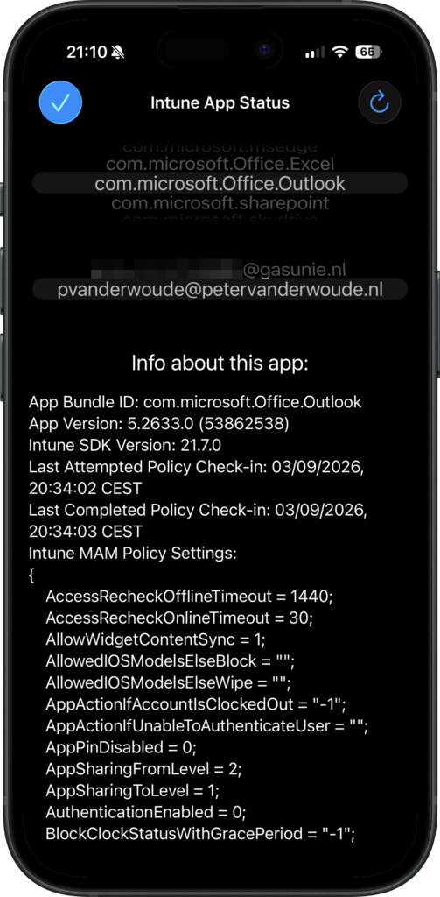

This week is all about a recently introduced feature for multiple managed accounts (MMA) with app protection policies. For a long time a big challenge with app protection policies (APP), or mobile application management (MAM) in general, was that it would only support a single managed account. Especially with the consultant-type scenarios, that could be really challenging. That would mean that as soon as the user already had a managed account from their own employer, that could not be combined with a managed account from the customer. Really challenging to address, almost impossible to be done right, and often resolved into not the best decisions. The good news is that this all changed! Starting recently, or almost starting, depending on the roll out, it is now possible to have multiple managed accounts with app protection policies in a single app. This post will go through the important details of this new feature, followed with the user experience. There is no real configuration that should be in place, but there are details to keep in mind.
Note: At the moment of writing, multiple managed accounts is rolling out gradually and may not yet be available.
Introducing multiple managed accounts with app protection policies
When looking at multiple managed accounts, the concept is actually pretty straightforward and probably in its core exactly what the name implies. Multiple managed accounts enables users to have multiple accounts, that require app protection policies, in a single app. In other words, as a consultant it is now possible to have a managed account from their own employer AND from the customer that they are working for. With that, it is of course important that the app actually supports multiple identities. Apps, like PowerApps, that don’t support multiple identities will not be able to support this functionality. Multiple managed accounts can be used in the following supported scenarios:
- Only accounts with mobile application management are used.
- One account is managed with mobile device management and mobile application management, while additional accounts are mobile application management only.
Note: At this moment multiple managed accounts is supported on Teams and Outlook for iOS and iPadOS devices.
Besides that, it is also important to understand that there are two ways in which apps can handle multiple managed accounts:
- In the segmented view, the app will only show the data of one account. In that case, everything is in the context of a single user and the user must actively switch between accounts. Policy enforcement applies to the active account.
- In the mixed view, the app will show the data for multiple accounts. In that case, everything is shown in a shared view for multiple accounts. Policy enforcement is applies when the app opens and policies are evaluated for each account. Besides that, it is important to understand that mixed views always enforce the most restrictive behavior. And on top of that, maybe even more important, is that, cut, copy, and paste are fully blocked, screen capture and screenshots are blocked, and other data protection controls default to the most restrictive behavior.
Note: This behavior change also affects a single managed account with unmanaged accounts in a mixed view.
Multiple managed accounts is a feature that works automatically with apps that support the functionality. There is nothing that needs to be configured by the IT administrator. There is, however, one configuration that can be used to block the usage of multiple managed accounts. In that case the IT administrator can use the IntuneMAMAllowedAccountsOnly key to restrict an app to a single managed account on managed devices. The following eight steps walk through the configuration of that specific configuration key by using a app configuration profile for managed devices.
- Open the Microsoft Intune admin center portal navigate to Apps > Configuration
- On the Apps | Configuration blade, click Add > Managed devices
- On the Basics page, provide a unique name to distinguish the policy from other similar policies, select Microsoft Teams or Microsoft Outlook as targeted app and click Next
- On the Settings page, as shown below in Figure 1, provide at least the following configuration and click Next
- Specify
IntuneMAMAllowedAccountsOnlyas key, selectStringas type, and setEnabledas the value
{kind=link}

- On the Assignments page, configure the assignment by selecting the applicable group and click Next
- On the Review + create page, review the configuration and click Create
Note: Keep in that this configuration is specific to an app configuration profile for managed devices. Only on managed devices it is possible for IT administrators to configure this behavior. Also, keep in mind that this key was not intended for this behavior and that it is actually an additional use case on top of its intended behavior.
Experiencing multiple managed accounts with app protection policies
When looking at the experience with multiple managed accounts with app protection policies, it is actually pretty straightforward, but also pretty challenging to show in a screenshot. The behavior is just something to experience. It is especially good to understand the behavior differences between the segmented view, which can be experienced in Microsoft Teams, and the mixed view, which can be experienced in Microsoft Outlook. Microsoft Teams will clearly provide a different behavior per account, as the user has actually got switch environment and account. Microsoft Outlook on the other hand will provide the most restrictive behavior that is applicable to the different managed accounts. That might even already have implications to the PIN, or sign-in behavior to the app.
Figure 2 on the right provides an overview of the applied app protection policies for the different managed accounts that have signed in. That overview can be reached by simply navigating to about://intunehelp in Microsoft Edge. It provides the best evidence of having multiple managed accounts within a single app. It first requires the app to be selected and based on that selection the available accounts will be shown.
Note: Keep in mind that multiple managed accounts with app protection policies is now limited to Teams and Outlook on iOS/iPadOS.
{kind=link}

More information
For more information about multiple managed accounts with app protection policies, refer to the following docs.
Discover more from All about Microsoft Intune
Subscribe to get the latest posts sent to your email.